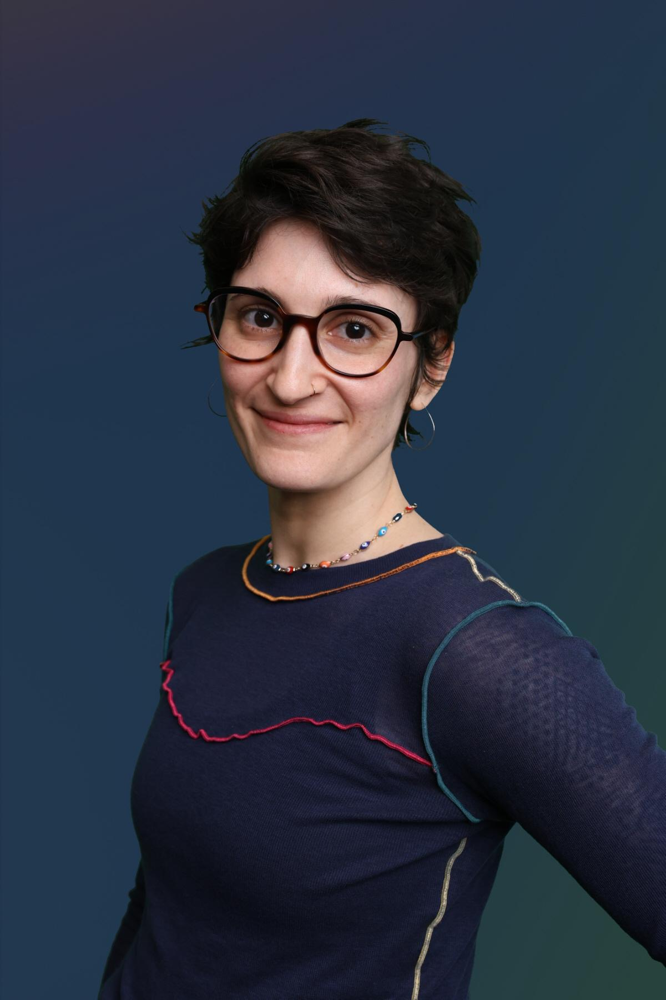

about

Bess brings more than 10 years of experience in teaching and academic research to her design practice. At Meta she worked on the Facebook design system and profile teams, creating components that rolled out across the app and defining the content strategy for how 3B+ people introduce themselves to one another.
Off the clock find her in ballet class, hiking Bay Area trails, or knitting under the watchful eye of her sassy tabby cat, Ezra.
work